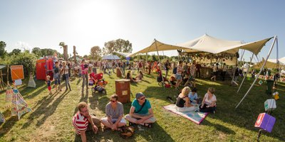
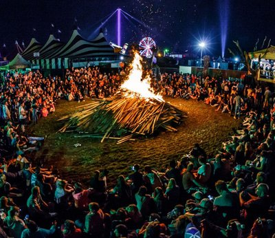

vrijdag
14:00-04:00
A future Ski-bar
Het collectief Computery Guys beschildert alles wat los en vast zit. Je kent ze misschien van Down The Rabit Hole, De Kerk of Doornroosje. Als zij aanwezig zijn, dan is het feest! In de garage van Jong Actief ligt een hoop zooi die ze in één dag ombouwen tot een futuristische ski-bar, compleet met dj's en performances. Let's put the art in party!


vrijdag
14:00-23:00
Sneeuwbal eFFect
RAUWKOST geeft je een overzicht van het activiteitenaanbod in de stad. eFFect festival is een interactief cultureel festival met sociale doelstellingen en vindt plaats in het groene landschap van jeugdzorgboerderij De Locatie op 9 + 10 juni 2018. Op het buitenterrein van de Tramkade bouwen ze een mini festival in boerderij-setting. Kom zeefdrukken, pannenkoeken bakken op een wastrommel of warm je handen bij het haardvuur van de smit.


vrijdag
20:30-23:15
PAPAJAHKUR
Papajahkur speelt tijdens de eerste editie van RAUWKOST Festival 2018 en heeft achtergronden in allerlei verschillende genres muziek wat zorgt voor een muzikale explosie met reggae muziek als fundering. Met roots in de rock muziek heeft Papajahkur veel ervaring met energieke live shows. Deze groep uit Den Bosch zit vol positieve energie en zorgt voor een flinke dosis 'Good vibes only!'.

vrijdag
21:00-22:00
TokTek
TokTek maakt ter plekke rauwe composities van loops uit andere concerten, geluiden van speelgoed, zelfgebouwde synthesizers en joysticks! Alles wordt door hem live gesampeld, verdraaid en weer terug gesmeten om zo een structuur te creëren waarin het verwachtingspatroon geen kans krijgt. Hij geeft zijn publiek telkens opnieuw het 'you ain't seen nothing yet' gevoel.


vrijdag
22:00-23:00
Slumberland
Het project Slumberland van muzikant en filmmaker Jochem Baelus  laat zien dat muziek ook op een andere manier gemaakt kan worden. Hij bouwde hiervoor zijn eigen instrument: een gigantisch apparaat dat hij live bedient, gemaakt van haardrogers, vervormde breinaalden, blaasbalgen, potten en pannen, oude super 8 projectoren en naaimachines. Dat alles bespeelt hij in combinatie met zijn eigen zang en rauwe gitaarspel, in combinatie met elektronica en twee live drummers! Als dat geen rauwe kost is...
vrijdag
22:15-23:15
Altin Gün
Altın Gün laat zich inspireren door het Turkse geluid uit de jaren ’70. De tijd dat artiesten zoals Selda Bağcan, Barış Manço en Erkin Koray traditionele muziek samensmolten met Westerse rockinvloeden. Bandleden van Jacco Gardner en Jungle By Night waren zo gefascineerd door dit geluid, dat ze op zoek gingen naar Turkse muzikanten. Daar kwamen Merve Dasdemir en Erdinc Yildiz Ecevit om de hoek kijken. Ze spelen liedjes van de eerder genoemde kunstenaars uit de jaren ’70, maar ook minder bekende tijdgenoten. Daarnaast maken ze hun eigen versies van traditionele Turkse muziek. Zo komen verschillende werelden samen tot een verfrissend en dansbaar geluid!


vrijdag
23:00-00:00
Kampvuursessie
RAUWKOST vindt plaats op 7 verschillende binnenlocaties. Je ziet dus nooit tegelijk wie er allemaal aanwezig zijn. Daarom scharen we ons vlak voordat het feestgedruis losbarst allemaal op één moment samen rond het kampvuur, om samen de nacht in te luiden. Ondertussen kunnen ze binnen even alles ombouwen voor het nachtprogramma.
vrijdag
00:00-04:00
Adoda
Decennia lang dacht men dat alles om de aarde draaide, totdat de theorie van Copernicus stelde dat alles juist om de zon draait. Toen kwamen de jonge honden van Adoda; na jaren lang dansen, plaatjes draaien, produceren en filosoferen zagen zij een nieuw licht. Geen van bovenstaande theorieën hebben het bij het juiste eind, waar het om draait is niet belangrijk, zolang we maar kunnen dansen.

vrijdag
00:00-01:00
Dr. Meaker
In Nederland zijn er maar weinig tot geen live drum 'n bass bands te vinden. Daarvoor zijn we dus maar gaan rondneuzen in dé DnB stad van Europa: Bristol. Al gauw stuitten we daar op Dr. Meaker. Deze band is daar rete hot, wordt wekelijks gedraaid op radio 1 van de BBC en won zelfs een prijs voor Urban Music. Verwacht stampende beats met soulvolle zangeressen en koperblazers. Tijdens RAUWKOST maken ze hun debuut in Nederland met maar één boodschap: live drum 'n bass is cool!
vrijdag
00:00-04:00
PACHA MAMA SOUNDSYSTEM
Pacha Mama Soundsystem is een collectief van vier mannen die proberen alle culturele en muzikale aspecten van de soundsystem-cultuur samen te brengen in hun live-shows. Zij bouwden hun soundsystem vanaf nul in 2011 en staan sindsdien garant voor volle zalen door het hele land. Vannacht zullen zij een volledig live dubprogramma verzorgen samen met o.a. saxofonist Rootsman, zanger Strawl en een percussionist.

vrijdag
01:00-02:00
Jo Goes Hunting
Jo Goes Hunting is het geesteskind van Jimmi Jo Hueting, een bijzonder getalenteerde jonge muzikant wiens achtergrond zich uitstrekt over genres en invloeden, resulterend in een rijk geluid dat een breed palet aan instrumenten, melodieën en beats toont. De diepte en het perspectief creëren een dynamische atmosfeer die zowel warm als rauw is.
vrijdag
02:00-03:00